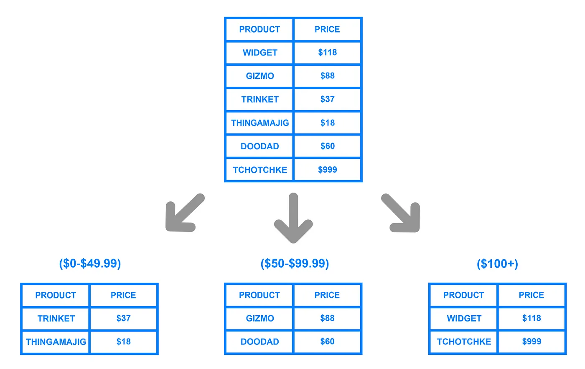

Database Sharding
Database sharding is the process of splitting up a database across multiple machines to improve the scalability of an application. In Sharding, one’s data is broken into two or more smaller chunks, called logical shards. The logical shards are then distributed across separate database nodes, referred to as physical shards.
Database shards are autonomous and they don’t share any of the same data or computing resources. In some cases, though, it makes sense to replicate certain tables into each shard to serve as referenced tables.
Often, Sharding is implemented at the application level, meaning that application includes code that defines which shard to transmit read and writes to. However, some database management systems have sharding capabilities built in, allowing you to implement sharding directly at the database level.
Advantages of Sharding: Link to heading
-
High Availability: With a sharded database, if there is outage in one database shard it makes only some part of application or website unavailable to some users, but other shards can continue operating without any issue. If database is unsharded, then an outage has potential to make entire application unavailable.
-
Faster queries response: Sharded database architecture speed up query response times. When you submit a query on a database that hasn’t been sharded, it may have to search every row in the table you’re querying before it can find the result set you are looking for. For an application with a large, monolithic database, queries can become prohibitively slow. By Sharding one table into multiple, though, queries have to go over fewer rows and their result sets are returned much more quickly.
-
More write bandwidth: With no master database serializing writes you can write in parallel which increases your write throughput. Writing is major bottleneck for many websites.
-
Scaling out: Sharding a database can help to facilitate
horizontal scaling, known asscaling out. A parallel backend means you can do more work simultaneously. You can handle higher user loads, especially when writing data, because there are parallel paths through your system. You can load balance web servers, which access shards over different network paths, which are processed by separate CPUs, which use separate caches of RAM and separate disk IO paths to process work. Very few bottlenecks limit your work.
Disadvantages of Sharding: Link to heading
-
Adds complexity in the system: Properly implementing a sharded database architecture is a complex task. If not done correctly, there is a significant risk that the sharding process can lead to lost data or corrupted tables. Sharding also have major impact on your team’s workflows. Rather than managing and accessing one’s data from single entry point, users must manage data across multiple shard locations, which could be potentially disruptive to some teams.
-
Rebalancing data: In a sharded database architecture, sometimes a shard outgrows other shards and becomes unbalanced, which is also known as
database hotspot. In this case any benefits of sharding the database is canceled out. The database would be likely need to be re-sharded to allow for a more even data distribution. Rebalancing has to be built in from the start otherwise while re-sharding, moving data from one shard to another shard requires lot of downtime. -
Joining data from multiple shards: To implement some complex functionalities we may need to pull lot of data from different sources spread across multiple shards. We can’t issue a query and get data from multiple shards. We need to issue multiple queries to different shards, get all the responses and merge them.
-
No Native Support: Sharding is not natively supported by every database engine. Because of this, sharding often requires a “roll your own”. This means that documentation for sharding or tips for troubleshooting problems are often difficult to find.
Type of Sharding Architecture: Link to heading
- Key Based Sharding: Key based sharding also known as
hash-based sharding, involves a value taken from newly written data — such as customer ID number, a client application IP address, Zip Code etc — and plugging it into hash function to determine which shards data should go to. Hash value is the shard ID used to determine which shard the incoming data will be stored on. To ensure that entries are placed in the correct shards and in a consistent manner, the values entered into the hash function should all come from the same column. This column is known as ashard key. A shard key should be static, meaning it shouldn’t contain values that might change over time.
Key-based sharding architecture is a fairly common sharding architecture. It becomes tricky when trying to dynamically add or remove database servers.
- Range Based Sharding:
Range-basedsharding involves sharding the data based on the range of given values. Let’s say you have a database that stores information about the products, a product will be stored in a shard based on the price range it fall into. It is relatively easy to implement, as application code just reads which range the data falls into and writes it to the corresponding shard.

Range based sharding does not protect data from being unevenly distributed, leading to the database hotspots.
- Directory Based Sharding: Directory based sharding maintains a static lookup table which used to keep track of which shard holds which data. Data from the shard key is written to the lookup table along with whatever shard each respective row should be written to.
Directory based sharding is flexible as compared to range-based sharding and key-based sharding. Range-based sharding limits you to specifying range of values, while key-based sharding limits you to using fixed hash-based function.
With directory based sharding there is a need to connect to lookup table before every read or write which will degrade the application performance. Lookup table can also become a single point of failure.
References
- http://highscalability.com/blog/2009/8/6/an-unorthodox-approach-to-database-design-the-coming-of-the.html
- https://www.digitalocean.com/community/tutorials/understanding-database-sharding
- https://signalvnoise.com/posts/1509-mr-moore-gets-to-punt-on-sharding
- https://www.25hoursaday.com/weblog/2009/01/16/BuildingScalableDatabasesProsAndConsOfVariousDatabaseShardingSchemes.aspx